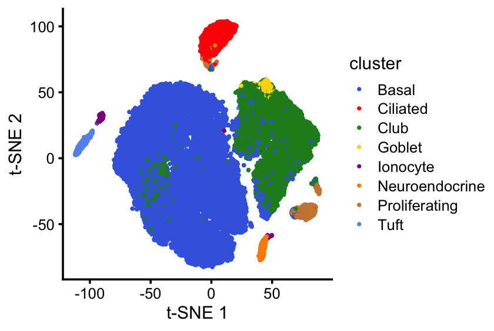
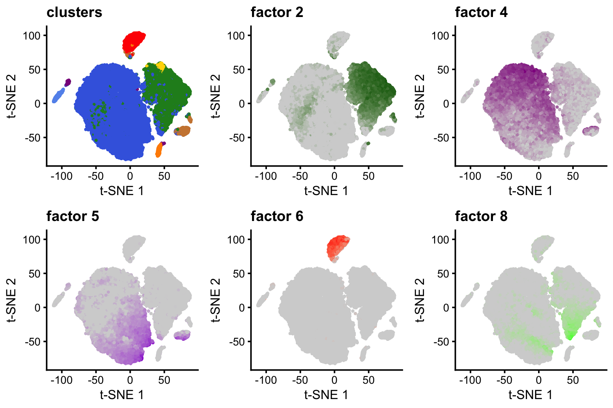

Explore results of applying EBNMF to Montoro et al scRNA-seq data
Peter Carbonetto
Last updated: 2026-09-24
Checks: 7 0
Knit directory: ebnmf-paper/
This reproducible R Markdown analysis was created with workflowr (version 1.7.1). The Checks tab describes the reproducibility checks that were applied when the results were created. The Past versions tab lists the development history.
Great! Since the R Markdown file has been committed to the Git repository, you know the exact version of the code that produced these results.
Great job! The global environment was empty. Objects defined in the global environment can affect the analysis in your R Markdown file in unknown ways. For reproduciblity it’s best to always run the code in an empty environment.
The command set.seed(20231214) was run prior to running
the code in the R Markdown file. Setting a seed ensures that any results
that rely on randomness, e.g. subsampling or permutations, are
reproducible.
Great job! Recording the operating system, R version, and package versions is critical for reproducibility.
Nice! There were no cached chunks for this analysis, so you can be confident that you successfully produced the results during this run.
Great job! Using relative paths to the files within your workflowr project makes it easier to run your code on other machines.
Great! You are using Git for version control. Tracking code development and connecting the code version to the results is critical for reproducibility.
The results in this page were generated with repository version 737b586. See the Past versions tab to see a history of the changes made to the R Markdown and HTML files.
Note that you need to be careful to ensure that all relevant files for
the analysis have been committed to Git prior to generating the results
(you can use wflow_publish or
wflow_git_commit). workflowr only checks the R Markdown
file, but you know if there are other scripts or data files that it
depends on. Below is the status of the Git repository when the results
were generated:
Ignored files:
Ignored: .DS_Store
Ignored: analysis/.DS_Store
Ignored: analysis/lps_fail_cache/
Ignored: data/SupTab7_Transition_Genes.csv~
Ignored: output/.DS_Store
Ignored: output/montoro_ebmf_fits.RData
Untracked files:
Untracked: flash_greedy_init_noisy_F.txt
Untracked: flash_greedy_init_noisy_L.txt
Untracked: montoro_more_tsne_plots.png
Untracked: noisy_swimmer.mat
Untracked: scripts/svm.test.normgrey.gz
Untracked: scripts/svm.train.normgrey.gz
Note that any generated files, e.g. HTML, png, CSS, etc., are not included in this status report because it is ok for generated content to have uncommitted changes.
These are the previous versions of the repository in which changes were
made to the R Markdown (analysis/montoro_plots.Rmd) and
HTML (docs/montoro_plots.html) files. If you’ve configured
a remote Git repository (see ?wflow_git_remote), click on
the hyperlinks in the table below to view the files as they were in that
past version.
| File | Version | Author | Date | Message |
|---|---|---|---|---|
| Rmd | 737b586 | Peter Carbonetto | 2026-09-24 | A couple of small fixes. |
| Rmd | 96036ba | Peter Carbonetto | 2026-09-24 | Added step to save fitted priors plot for k=30 fit. |
| Rmd | 1894cbf | Peter Carbonetto | 2026-09-24 | Improved the residuals plots. |
| Rmd | 196573e | Peter Carbonetto | 2026-09-24 | Added LFCs for ‘key genes’ in k=30 fit. |
| Rmd | bd7612a | Peter Carbonetto | 2026-09-23 | Added ggsave call. |
| Rmd | 83aa6c7 | Peter Carbonetto | 2026-09-23 | A few adjustments to the plots. |
| Rmd | defb18c | Peter Carbonetto | 2026-09-22 | Added code chunk to monotoro_plots.Rmd for outputting some results to a CSV file. |
| Rmd | 54352ce | Peter Carbonetto | 2026-09-18 | Added a ggsave call. |
| html | c05a192 | Peter Carbonetto | 2026-09-18 | Build site. |
| Rmd | 1be771b | Peter Carbonetto | 2026-09-18 | wflow_publish("analysis/montoro_plots.Rmd", verbose = T, view = F) |
| Rmd | 54f6e42 | Peter Carbonetto | 2026-09-18 | Added some t-sne plots to the montoro_plots analysis. |
| Rmd | 0c1e012 | Peter Carbonetto | 2026-09-16 | Small edit to the montoro_plots analysis. |
| html | 13b1b9a | Peter Carbonetto | 2026-09-16 | Improved the k=12 structure plot. |
| Rmd | 44ebb14 | Peter Carbonetto | 2026-09-16 | wflow_publish("analysis/montoro_plots.Rmd", verbose = T, view = F) |
| html | 1632ddf | Peter Carbonetto | 2026-09-16 | Build site. |
| Rmd | d20bc53 | Peter Carbonetto | 2026-09-16 | wflow_publish("analysis/montoro_plots.Rmd", verbose = T, view = F) |
| Rmd | d2aef59 | Peter Carbonetto | 2026-09-16 | Identified ‘key genes’ for k=12 fit. |
| html | 37540a1 | Peter Carbonetto | 2026-09-03 | Build site. |
| Rmd | 69f6ddc | Peter Carbonetto | 2026-09-03 | wflow_publish("analysis/montoro_plots.Rmd", view = F, verbose = T) |
| html | 45c4516 | Peter Carbonetto | 2026-09-03 | Build site. |
| Rmd | c256170 | Peter Carbonetto | 2026-09-03 | Small fix to the plots. |
| Rmd | e925a6c | Peter Carbonetto | 2026-09-03 | A few more adjustments to the structure plots. |
| Rmd | 0665d63 | Peter Carbonetto | 2026-09-03 | Updating the structure plots for the k=30 fit. |
| Rmd | 6511353 | Peter Carbonetto | 2026-09-03 | Updated some of the plots for the k=30 fit. |
| html | a76fb76 | Peter Carbonetto | 2026-09-01 | Build site. |
| Rmd | 584db26 | Peter Carbonetto | 2026-09-01 | wflow_publish("analysis/montoro_plots.Rmd", verbose = T, view = F) |
| html | 8dedf0d | Peter Carbonetto | 2026-09-01 | Build site. |
| Rmd | 623d015 | Peter Carbonetto | 2026-09-01 | wflow_publish("analysis/montoro_plots.Rmd", verbose = T, view = F) |
| html | aed340f | Peter Carbonetto | 2026-09-01 | Build site. |
| Rmd | 76fce32 | Peter Carbonetto | 2026-09-01 | wflow_publish("analysis/montoro_plots.Rmd", view = F, verbose = T) |
| html | a904cfb | Peter Carbonetto | 2026-09-01 | Ran wflow_publish("montoro_plots.Rmd"). |
| Rmd | c4ee248 | Peter Carbonetto | 2026-09-01 | Improved the structure plots. |
| Rmd | 00dd5b3 | Peter Carbonetto | 2026-09-01 | Added some notes to the montoro_plots analysis. |
| Rmd | 4f45962 | Peter Carbonetto | 2026-09-01 | A few fixes to the plots in montoro_plots.Rmd. |
| Rmd | 78e5355 | Peter Carbonetto | 2026-08-31 | fixed a couple bugs in the structure plots. |
| Rmd | c8708bb | Peter Carbonetto | 2026-08-31 | Fixed a typo. |
| html | 2a4e939 | Peter Carbonetto | 2026-08-31 | Ran wflow_publish("analysis/montoro_plots.Rmd"). |
| Rmd | 88baf7a | Peter Carbonetto | 2026-08-31 | A few adjustments to the plots. |
| Rmd | 558a28f | Peter Carbonetto | 2026-08-31 | Added structure plots for k=12 fit to montoro_plots analysis. |
| Rmd | 0e7adf0 | Peter Carbonetto | 2026-08-31 | A few adjustments to the plots. |
| Rmd | 3c4ba3e | Peter Carbonetto | 2026-08-31 | Added plots summarizing fitted priors and residuals for k=12 ebnmf model. |
| Rmd | e096b49 | Peter Carbonetto | 2026-08-31 | Added steps to load ebnmf outputs into montoro_plots analysis. |
| html | 3c94cc0 | Peter Carbonetto | 2026-08-28 | Fixed some of the settings in the montoro_plots workflowr page. |
| Rmd | 2e94652 | Peter Carbonetto | 2026-08-28 | wflow_publish("montoro_plots.Rmd") |
| html | 8cf02e1 | Peter Carbonetto | 2026-08-28 | First build of the montoro_plots workflowr page. |
| Rmd | ec82b5b | Peter Carbonetto | 2026-08-28 | wflow_publish("montoro_plots.Rmd") |
Here I will create some plots to learn more about the EBNMF analysis of the Montoro et al data set.
Initial setup
Load some R packages that I will use to study the results:
library(ggplot2)
library(ggrepel)
library(cowplot)
library(fastTopics)Set the seed for reproducibility:
set.seed(1)Load the EBNMF results obtained from running the
montoro_fits.R script:
load("output/montoro_ebmf_fits.RData")Extract some information about the cells:
x <- rownames(fl_k12$fl_ldf$F)
x <- strsplit(x,"_",fixed = TRUE)
meta_data <- data.frame(barcode = sapply(x,"[[",1),
timepoint = sapply(x,"[[",2),
mouse = sapply(x,"[[",3),
lineage = sapply(x,"[[",4),
celltype = sapply(x,"[[",5))
meta_data <- transform(meta_data,
timepoint = factor(timepoint),
mouse = factor(mouse),
lineage = factor(lineage),
celltype = factor(celltype))Number of cells and genes:
cat("Number of cells:",nrow(fl_k12$fl_ldf$F),"\n")
cat("Number of genes:",nrow(fl_k12$fl_ldf$L),"\n")
# Number of cells: 66265
# Number of genes: 3440EBNMF with 12 factors
First is a plot of the first (“baseline”) factor vs. the residual s.d. parameters:
residuals_plot <- function (baseline_exp, residual_sd, genes) {
pdat <- data.frame(gene = genes,
baseline_exp = baseline_exp,
residual_sd = residual_sd)
return(ggplot(pdat,aes(x = baseline_exp,y = residual_sd,label = gene)) +
geom_point(color = "black") +
geom_text_repel(color = "black",size = 2.5,max.overlaps = 35) +
labs(x = "first factor",y = "residual s.d.") +
theme_cowplot(font_size = 10))
}
residuals_plot(baseline_exp = fl_k12$fl_ldf$L[,1],
residual_sd = fl_k12$residuals_sd,
genes = rownames(fl_k12$fl_ldf$L))
# Warning: ggrepel: 3437 unlabeled data points (too many overlaps). Consider
# increasing max.overlaps
| Version | Author | Date |
|---|---|---|
| 2a4e939 | Peter Carbonetto | 2026-08-31 |
These next plots summarize the priors on \({\bf F}\) and \({\bf L}\), and could accompany the Structure plot shown below. However I’m not sure if the scale parameter tells us anything useful—it is mainly the prior probability that should inform the sparsity pattern. So maybe in the end we will only use the left-hand plots.
The first two plots show the priors on the columns of \({\bf L}\).
factor_colors <- c(k1 = "black",k2 = "forestgreen",k3 = "royalblue",
k4 = "darkmagenta",k5 = "violet",k6 = "red",
k7 = "lightgray",k8 = "limegreen",k9 = "cyan",
k10 = "darkorange",k11 = "sienna",k12 = "gold")
fitted_priors_plot <- function (ghat, colors, hidden_factors = NULL) {
K <- length(ghat)
pdat <- data.frame(k = 1:K,
pi = sapply(ghat,function (x) x$pi[2]),
scale = sapply(ghat,function (x) x$scale[2]),
color = colors,
hidden = FALSE)
pdat[hidden_factors,"hidden"] <- TRUE
rows1 <- order(pdat$pi,decreasing = FALSE)
rows2 <- order(pdat$scale,decreasing = FALSE)
pdat1 <- pdat[rows1,]
pdat2 <- pdat[rows2,]
pdat1 <- transform(pdat1,k = factor(k,k))
pdat2 <- transform(pdat2,k = factor(k,k))
p1 <- ggplot(pdat1,aes(x = pi,y = k,color = k,shape = hidden)) +
geom_point() +
scale_color_manual(values = pdat1$color) +
scale_shape_manual(values = c(19,1)) +
labs(x = "prior probability") +
guides(color = "none",shape = "none") +
theme_cowplot(font_size = 9)
p2 <- ggplot(pdat2,aes(x = scale,y = k,color = k,shape = hidden)) +
geom_point() +
scale_color_manual(values = pdat2$color) +
scale_shape_manual(values = c(19,1)) +
labs(x = "scale parameter") +
guides(color = "none",shape = "none") +
theme_cowplot(font_size = 9)
return(plot_grid(p1,p2,nrow = 1,ncol = 2))
}
fitted_priors_plot(fl_k12$L_ghat,unname(factor_colors),hidden_factors = 1)
The second two plots show the priors on the columns of \({\bf F}\).
fitted_priors_plot(fl_k12$F_ghat,unname(factor_colors),hidden_factors = 1)
The non-negative matrix factorization with \(K = 12\) factors identifies the higher-level structures in the Montoro et al data set:
set.seed(1)
factors_to_plot <- c(7,5,8,3,11,2,4,6,9,10,12)
celltypes <- as.character(meta_data$celltype)
celltypes[celltypes == "Club (hillock-associated)"] <- "Club"
celltypes[celltypes == "Goblet.1"] <- "Goblet"
celltypes[celltypes == "Goblet.2"] <- "Goblet"
celltypes[celltypes == "Goblet.progenitor"] <- "Goblet"
celltypes[celltypes == "Tuft.1"] <- "Tuft"
celltypes[celltypes == "Tuft.2"] <- "Tuft"
celltypes[celltypes == "Tuft.progenitor"] <- "Tuft"
celltypes <- factor(celltypes,
c("Basal","Club","Goblet","Ionocyte","Ciliated",
"Tuft","Neuroendocrine","Proliferating"))
scale_cols <- function (A, b)
return(t(t(A) * b))
F <- fl_k12$fl_ldf$F
L <- with(fl_k12$fl_ldf,scale_cols(L,D))
colnames(L) <- paste0("k",1:12)
colnames(F) <- paste0("k",1:12)
rows <- c(sample(which(celltypes == "Basal" &
meta_data$lineage == "Tom"),4000),
sample(which(celltypes == "Club" &
meta_data$lineage == "Tom"),2500),
which(celltypes != "Basal" &
celltypes != "Club" &
meta_data$lineage == "Tom"))
rows <- sort(rows)
F <- F[rows,]
celltypes <- celltypes[rows]
rows1 <- which(meta_data[rows,"timepoint"] == "Tp0")
rows2 <- which(meta_data[rows,"timepoint"] == "Tp30")
rows3 <- which(meta_data[rows,"timepoint"] == "Tp60")
p1 <- structure_plot(F[rows1,],grouping = celltypes[rows1],gap = 10,
topics = factors_to_plot,colors = factor_colors) +
labs(y = "membership",title = "0 days") +
guides(fill = "none") +
theme(plot.title = element_text(size = 9,face = "plain"),
plot.margin = unit(c(t = 0,r = 0,b = -2,l = 0),"lines"))
p2 <- structure_plot(F[rows2,],grouping = celltypes[rows2],gap = 10,
topics = factors_to_plot,colors = factor_colors) +
labs(y = "membership",title = "30 days") +
guides(fill = "none") +
theme(plot.title = element_text(size = 9,face = "plain"),
plot.margin = unit(c(t = 0,r = 0,b = -2,l = 0),"lines"))
p3 <- structure_plot(F[rows3,],grouping = celltypes[rows3],gap = 10,
topics = factors_to_plot,colors = factor_colors) +
labs(y = "membership",fill = "factor",title = "60 days") +
theme(plot.title = element_text(size = 9,face = "plain"),
plot.margin = unit(c(t = 0,r = 0,b = 0,l = 0),"lines"))
plot_grid(p1,p2,p3,nrow = 3,ncol = 1,rel_heights = c(1,1,1.85))
Note the number of cells per cell type:
table(meta_data$celltype)
#
# Basal Ciliated Club
# 42093 3016 13568
# Club (hillock-associated) Goblet.1 Goblet.2
# 4132 79 9
# Goblet.progenitor Ionocyte Neuroendocrine
# 315 276 630
# Proliferating Tuft.1 Tuft.2
# 1413 413 259
# Tuft.progenitor
# 62And the number of cells per cell type at each time point:
table(meta_data$celltype,meta_data$timepoint)
#
# Tp0 Tp30 Tp60
# Basal 13337 11822 16934
# Ciliated 772 873 1371
# Club 2726 5830 5012
# Club (hillock-associated) 539 1963 1630
# Goblet.1 40 26 13
# Goblet.2 4 1 4
# Goblet.progenitor 126 93 96
# Ionocyte 63 116 97
# Neuroendocrine 104 318 208
# Proliferating 217 586 610
# Tuft.1 77 187 149
# Tuft.2 53 113 93
# Tuft.progenitor 5 33 24Structure plot merging the three time points:
p <- structure_plot(F,grouping = celltypes,gap = 10,topics = factors_to_plot,
colors = factor_colors) +
labs(y = "membership",fill = "factor",title = "0-60 days")
print(p)
The log-fold change (LFC) estimates for selected genes:
key_genes <- c("Krt5","Dapl1", # Basal (k4, k5)
"Bpifa1","Scgb1a1", # Club (k2, k8)
"Krt13","Krt4", # "Hillock" (k5, k8)
"Cdhr4","Cdh26", # Ciliated (k6)
"Ccdc67","Ccdc34", # Ciliated (k11)
"Chga","Calca", # Neuroendocrine (k10)
"Trpm5","Gng13", # Tuft (k9)
"Krt18","Sfn", # Transitional/differentiating (k3)
"Hspa1a","Hspb1") # Unknown (k7)
gene_rankings <- apply(-L,2,rank)
gene_rankings[key_genes,]
round(L[key_genes,],digits = 3)
# k1 k2 k3 k4 k5 k6 k7 k8 k9 k10 k11 k12
# Krt5 2557 3263 666 108 17 2640 891 2890 2355 2382 2497 1200
# Dapl1 557 3411 160 34 116 3267 584 2441 1195 2752 3058 912
# Bpifa1 216 1 12 109 3157 101 79 23 75 43 21 295
# Scgb1a1 349 4 894 371 2083 52 128 2 101 62 91 193
# Krt13 3412 3317 3349 3378 205 2614 3408 317 2257 2420 2555 1949
# Krt4 2064 616 846 578 39 2744 2398 18 2137 2242 2676 1692
# Cdhr4 1823 1837 2004 1983 2070 146 2016 1716 2533 2563 784 2409
# Cdh26 2167 1654 2130 2136 2334 149 2451 2945 2715 2778 3435 2111
# Ccdc67 2778 1955 2851 3227 3038 1782 1255 2919 2944 2585 558 1317
# Ccdc34 598 1264 2238 1347 1324 797 1000 985 1222 1471 114 41
# Chga 3119 2418 2412 2449 3226 3016 1505 1855 3440 31 2955 2884
# Calca 1741 1717 1460 2143 2147 2384 1487 1504 3349 28 2701 2003
# Trpm5 2483 1827 1914 2221 2909 3169 2102 2168 91 3390 3035 2970
# Gng13 945 1699 1780 2932 3108 2318 2245 1719 7 1355 1205 2283
# Krt18 234 26 7 248 3100 47 74 22 8 13 301 320
# Sfn 370 238 1 20 8 687 107 231 1855 587 1166 411
# Hspa1a 313 40 82 298 808 751 1 49 1228 2550 1058 3035
# Hspb1 184 156 328 207 247 2439 2 12 2471 711 1243 2544
# k1 k2 k3 k4 k5 k6 k7 k8 k9 k10 k11 k12
# Krt5 0.000 0.000 0.250 1.462 2.963 0.000 0.050 0.000 0.000 0.000 0.000 0.084
# Dapl1 0.140 0.000 1.139 2.200 1.480 0.000 0.172 0.000 0.130 0.000 0.000 0.188
# Bpifa1 0.823 7.912 2.885 1.452 0.000 2.005 1.241 3.450 2.463 2.822 3.263 0.885
# Scgb1a1 0.359 5.930 0.110 0.679 0.000 2.584 0.986 4.818 2.264 2.614 2.239 1.189
# Krt13 0.000 0.000 0.000 0.000 1.150 0.000 0.000 0.894 0.000 0.000 0.000 0.001
# Krt4 0.000 0.335 0.132 0.422 2.251 0.000 0.000 3.746 0.001 0.001 0.000 0.006
# Cdhr4 0.000 0.002 0.000 0.000 0.000 1.701 0.000 0.000 0.000 0.000 0.493 0.000
# Cdh26 0.000 0.009 0.000 0.000 0.000 1.692 0.000 0.000 0.000 0.000 0.000 0.000
# Ccdc67 0.000 0.000 0.000 0.000 0.000 0.067 0.010 0.000 0.000 0.000 0.812 0.055
# Ccdc34 0.117 0.044 0.000 0.047 0.063 0.559 0.034 0.152 0.119 0.093 2.092 1.938
# Chga 0.000 0.000 0.000 0.000 0.000 0.000 0.000 0.000 0.000 3.089 0.000 0.000
# Calca 0.000 0.006 0.001 0.000 0.000 0.000 0.000 0.016 0.000 3.382 0.000 0.000
# Trpm5 0.000 0.002 0.000 0.000 0.000 0.000 0.000 0.000 2.330 0.000 0.000 0.000
# Gng13 0.014 0.007 0.000 0.000 0.000 0.001 0.000 0.000 4.227 0.125 0.196 0.000
# Krt18 0.754 2.995 3.123 0.885 0.000 2.720 1.275 3.479 4.119 3.977 1.428 0.808
# Sfn 0.330 0.885 4.066 2.380 3.503 0.654 1.067 1.212 0.010 0.700 0.211 0.622
# Hspa1a 0.463 2.549 1.636 0.802 0.319 0.602 5.618 2.625 0.117 0.000 0.264 0.000
# Hspb1 1.022 1.158 0.715 0.992 1.063 0.000 3.858 3.930 0.000 0.508 0.178 0.000Factor 12 identifies a population of proliferating cells and indeed some of the top genes include cell cycle genes:
top_cell_cycle <- c("Cdk1","Ube2c","Top2a")
round(L[top_cell_cycle,],digits = 3)
# k1 k2 k3 k4 k5 k6 k7 k8 k9 k10 k11 k12
# Cdk1 0 0.003 0.000 0.005 0 0 0 0 0.000 0 0.173 1.678
# Ube2c 0 0.000 0.013 0.000 0 0 0 0 0.000 0 0.000 2.861
# Top2a 0 0.000 0.012 0.000 0 0 0 0 0.017 0 0.040 2.100Save the LFC estimates from the \(K = 12\) fit to a CSV file:
out <- as.data.frame(round(L,digits = 4))
out <- cbind(data.frame(gene = rownames(out)),out)
write.csv(format(out,scientific = FALSE,digits = 4),
file = "montoro_lfc_k12.csv",quote = FALSE,row.names = FALSE)This plot replicates the t-SNE plot in Fig. 3a of the Montoro et al (2018) paper:
tsne <- read.csv("data/41586_2018_393_MOESM6_ESM.csv.gz",
stringsAsFactors = FALSE,header = TRUE)
tsne <- transform(tsne,
cluster = factor(cluster),
mouse = factor(mouse),
barcode = paste(barcode,1,sep = "-"))
F <- fl_k12$fl_ldf$F
colnames(F) <- paste0("k",1:12)
ids1 <- strsplit(rownames(F),"_")
ids1 <- paste(sapply(ids1,"[[",1),
sapply(ids1,"[[",2),
sapply(ids1,"[[",3),
sep = "_")
ids2 <- paste(tsne$barcode,tsne$mouse,sep = "_")
ids <- unique(intersect(ids1,ids2))
rows1 <- match(ids,ids1)
rows2 <- match(ids,ids2)
F <- F[rows1,]
tsne <- tsne[rows2,]
pdat <- cbind(tsne,F)
cluster_colors <- c("royalblue","red","forestgreen","gold",
"darkmagenta","darkorange","peru","cornflowerblue")
p1 <- ggplot(pdat,aes(x = tSNE_1,y = tSNE_2,color = cluster)) +
geom_point(size = 0.35) +
scale_color_manual(values = cluster_colors) +
labs(x = "t-SNE 1",y = "t-SNE 2") +
theme_cowplot(font_size = 9)
print(p1)
| Version | Author | Date |
|---|---|---|
| c05a192 | Peter Carbonetto | 2026-09-18 |
Compare some of the EBNMF factors to the t-SNE embedding from the Montoro et al (2018) paper:
p2 <- ggplot(pdat,aes(x = tSNE_1,y = tSNE_2,color = k2)) +
geom_point(size = 0.35,show.legend = FALSE) +
scale_color_gradient(low = "lightgray",high = "darkgreen") +
labs(x = "t-SNE 1",y = "t-SNE 2",title = "factor 2") +
theme_cowplot(font_size = 9)
p3 <- ggplot(pdat,aes(x = tSNE_1,y = tSNE_2,color = k4)) +
geom_point(size = 0.35,show.legend = FALSE) +
scale_color_gradient(low = "lightgray",high = "darkmagenta") +
labs(x = "t-SNE 1",y = "t-SNE 2",title = "factor 4") +
theme_cowplot(font_size = 9)
p4 <- ggplot(pdat,aes(x = tSNE_1,y = tSNE_2,color = k5)) +
geom_point(size = 0.35,show.legend = FALSE) +
scale_color_gradient(low = "lightgray",high = "darkviolet") +
labs(x = "t-SNE 1",y = "t-SNE 2",title = "factor 5") +
theme_cowplot(font_size = 9)
p5 <- ggplot(pdat,aes(x = tSNE_1,y = tSNE_2,color = k6)) +
geom_point(size = 0.35,show.legend = FALSE) +
scale_color_gradient(low = "lightgray",high = "red") +
labs(x = "t-SNE 1",y = "t-SNE 2",title = "factor 6") +
theme_cowplot(font_size = 9)
p6 <- ggplot(pdat,aes(x = tSNE_1,y = tSNE_2,color = k8)) +
geom_point(size = 0.35,show.legend = FALSE) +
scale_color_gradient(low = "lightgray",high = "green") +
labs(x = "t-SNE 1",y = "t-SNE 2",title = "factor 8") +
theme_cowplot(font_size = 9)
plot_grid(p1 + guides(color = "none") + ggtitle("clusters"),
p2,p3,p4,p5,p6,nrow = 2,ncol = 3)
| Version | Author | Date |
|---|---|---|
| c05a192 | Peter Carbonetto | 2026-09-18 |
EBNMF with 30 factors
Plot first (“baseline”) factor vs. the residual s.d. parameters:
p <- residuals_plot(baseline_exp = fl_k30$ldf$L[,1],
residual_sd = fl_k30$residuals_sd,
genes = rownames(fl_k30$ldf$L))
print(p)
# Warning: ggrepel: 3433 unlabeled data points (too many overlaps). Consider
# increasing max.overlaps
| Version | Author | Date |
|---|---|---|
| 45c4516 | Peter Carbonetto | 2026-09-03 |
ggsave("montoro_residuals_plot_k30.pdf",p,height = 3.5,width = 3.5)
# Warning: ggrepel: 3411 unlabeled data points (too many overlaps). Consider
# increasing max.overlapsPlots summarizing the priors on the columns of \({\bf L}\):
factor_colors <-
c(k1 = "black",k2 = "darkblue",k3 = "forestgreen",k4 = "royalblue",
k5 = "red",k6 = "gray",k7 = "black",k8 = "black",
k9 = "cyan",k10 = "limegreen",k11 = "black",k12 = "darkorange",
k13 = "black",k14 = "black",k15 = "dodgerblue",k16 = "darkmagenta",
k17 = "blue",k18 = "salmon",k19 = "gold",k20 = "sienna",
k21 = "black",k22 = "peru",k23 = "black",k24 = "magenta",
k25 = "black",k26 = "black",k27 = "black",k28 = "black",
k29 = "black",k30 = "black")
celltype_factors_v1 <- c(6,16,10,9,2,4,3,18,5,17,15,12,22,20,24,19)
celltype_factors <- c(9,16,10,2,4,3,18,5,17,15,12,22,20,24,19)
p1 <- fitted_priors_plot(fl_k30$L_ghat,unname(factor_colors),
hidden_factors = setdiff(1:30,celltype_factors))
p1
| Version | Author | Date |
|---|---|---|
| 45c4516 | Peter Carbonetto | 2026-09-03 |
Plots summarizing the priors on the columns of \({\bf F}\):
p2 <- fitted_priors_plot(fl_k30$F_ghat,unname(factor_colors),
hidden_factors = setdiff(1:30,celltype_factors))
p2
| Version | Author | Date |
|---|---|---|
| 45c4516 | Peter Carbonetto | 2026-09-03 |
Notice that the priors on \({\bf F}\) (which contains the memberships) is a priori much more sparse than \({\bf L}\)
The \(K = 30\) fit captures more fine-scale structure. The Structure plots show the primary cell-type-structure captured by the factors. (Factors that capture other types of structure are not shown.) Here we focus on the non-lineage-labeled cells (“tdTomato”) since the lineage-labeled cells feature fewer of the rare cell types such as goblet and ionocyte.
set.seed(1)
celltypes <- meta_data$celltype
celltypes <- as.character(meta_data$celltype)
celltypes[celltypes == "Club (hillock-associated)"] <- "Hillock"
celltypes[celltypes == "Goblet.1"] <- "Goblet"
celltypes[celltypes == "Goblet.2"] <- "Goblet"
celltypes[celltypes == "Goblet.progenitor"] <- "Goblet"
celltypes[celltypes == "Tuft.progenitor"] <- "Tuft.2"
celltypes <- factor(celltypes,
c("Basal","Club","Hillock",
"Goblet","Ionocyte","Ciliated",
"Tuft.1","Tuft.2","Neuroendocrine","Proliferating"))
F <- fl_k30$ldf$F
L <- with(fl_k30$ldf,scale_cols(L,D))
colnames(L) <- paste0("k",1:30)
colnames(F) <- paste0("k",1:30)
F[,9] <- 2.5*F[,9]
F[,10] <- 2.5*F[,10]
F[,24] <- 1.5*F[,24]
rows <- c(sample(which(celltypes == "Basal" &
meta_data$lineage == "Tom"),5000),
sample(which(celltypes == "Club" &
meta_data$lineage == "Tom"),4000),
which(celltypes != "Basal" & celltypes != "Club" &
meta_data$lineage == "Tom"))
rows <- sort(rows)
F <- F[rows,]
celltypes <- celltypes[rows]
rows1 <- which(meta_data[rows,"timepoint"] == "Tp0")
rows2 <- which(meta_data[rows,"timepoint"] == "Tp30")
rows3 <- which(meta_data[rows,"timepoint"] == "Tp60")
p1 <- structure_plot(F[rows1,],grouping = celltypes[rows1],gap = 8,
topics = celltype_factors,colors = factor_colors) +
labs(y = "membership",title = "0 days") +
guides(fill = "none") +
theme(plot.title = element_text(size = 9,face = "plain"),
plot.margin = unit(c(t = 0,r = 0,b = -2,l = 0),"lines"))
p2 <- structure_plot(F[rows2,],grouping = celltypes[rows2],gap = 8,
topics = celltype_factors,colors = factor_colors) +
labs(y = "membership",title = "30 days") +
guides(fill = "none") +
theme(plot.title = element_text(size = 9,face = "plain"),
plot.margin = unit(c(t = 0,r = 0,b = -2,l = 0),"lines"))
p3 <- structure_plot(F[rows3,],grouping = celltypes[rows3],gap = 8,
topics = celltype_factors,colors = factor_colors) +
labs(y = "membership",fill = "factor",title = "60 days") +
theme(plot.title = element_text(size = 9,face = "plain"),
plot.margin = unit(c(t = 0,r = 0,b = 0,l = 0),"lines"))
plot_grid(p1,p2,p3,nrow = 3,ncol = 1,rel_heights = c(1,1,1.85))
| Version | Author | Date |
|---|---|---|
| 45c4516 | Peter Carbonetto | 2026-09-03 |
Structure plot merging the three time points:
set.seed(2)
p <- structure_plot(F,grouping = celltypes,gap = 8,topics = celltype_factors,
colors = factor_colors,perplexity = 100) +
labs(y = "membership",fill = "factor",title = "0-60 days") +
ylim(0,1.75)
print(p)
# Warning: Removed 25 rows containing missing values or values outside the scale range
# (`geom_col()`).The log-fold change (LFC) estimates for selected genes:
key_genes <- c("Krt5","Dapl1", # Basal (k2, k4, k9)
"Bpifa1","Scgb1a1", # Club (k3, k16, k10)
"Krt13","Krt4", # "Hillock" (k9, k10)
"Cdhr4","Cdh26", # Ciliated (k5)
"Ccdc67","Ccdc34", # Ciliated (k18)
"Chga","Calca", # Neuroendocrine (k12)
"Trpm5","Gng13", # Tuft (k15, k17)
"Gp2", # Goblet (k24)
"Foxi1","Cftr") # Ionocyte (k19)
gene_rankings <- apply(-L,2,rank)
gene_rankings[key_genes,]
round(L[key_genes,sort(celltype_factors)],digits = 3)
# k1 k2 k3 k4 k5 k6 k7 k8 k9 k10 k11 k12 k13 k14
# Krt5 2215 351 3091 137 2612 6 628 2775 48 2589 3340 2246 2672 2573
# Dapl1 1421 119 3386 21 3263 81 281 242 105 3041 312 2570 3387 3021
# Bpifa1 1229 11 1 738 448 3089 35 1 2369 1505 12 57 6 13
# Scgb1a1 765 603 7 227 92 2672 146 105 1657 13 252 78 1 14
# Krt13 3392 3356 3278 3362 2517 645 3404 2938 125 138 3370 2208 3035 3370
# Krt4 1656 609 599 1009 2942 89 1739 177 45 3 2458 2124 2816 1770
# Cdhr4 3008 2676 2602 2868 134 2666 2525 1097 2084 2274 3078 2392 2141 1051
# Cdh26 2403 2292 1589 2345 144 2477 2725 2201 2329 2967 2711 2603 2160 689
# Ccdc67 3104 3086 2159 3276 1728 2806 2642 3339 3333 2704 1897 2703 2241 618
# Ccdc34 497 2133 1176 1266 748 1215 1002 825 1234 965 965 1424 1215 1112
# Chga 2886 2280 1761 2628 3009 3052 1904 2042 2902 2180 3048 29 1980 766
# Calca 1862 1371 1548 2455 2323 2110 1817 1711 1831 1574 1601 24 1534 1487
# Trpm5 2614 2347 1778 2639 3253 3045 2784 2558 2981 2596 2065 3333 1398 736
# Gng13 622 2402 1796 2503 2222 2598 2835 1495 3242 2057 1139 1351 1141 2056
# Gp2 3357 3271 1545 3295 3335 2873 3372 3383 2795 3396 3258 2642 535 3300
# Foxi1 1978 2850 2677 2869 3222 2297 2174 1632 2769 2735 2969 2833 2754 908
# Cftr 2414 1799 1660 2037 3255 3104 2372 2685 3265 3180 1510 3303 2653 694
# k15 k16 k17 k18 k19 k20 k21 k22 k23 k24 k25 k26 k27 k28
# Krt5 2002 2561 2019 2302 1976 543 1858 1312 421 2096 688 1256 275 966
# Dapl1 760 3230 2520 3036 2558 1093 1526 450 3079 3167 2320 1562 1538 1680
# Bpifa1 88 4 170 709 193 679 39 115 23 5 32 212 1089 1560
# Scgb1a1 131 1 145 369 72 357 32 284 5 3 13 77 452 1541
# Krt13 2030 3363 1867 2313 1817 1660 3221 1921 3295 2243 2591 1314 2148 1354
# Krt4 1942 319 1928 2825 1800 1707 1754 580 2290 2756 2153 1072 1251 1361
# Cdhr4 2376 2060 2347 867 2248 2276 2637 2398 1526 1194 2254 1918 2593 2155
# Cdh26 2568 2249 2438 3425 1980 2024 2399 2056 2536 1699 3019 1943 2293 1593
# Ccdc67 2891 2797 2862 494 2787 3018 1899 906 2933 1715 3086 2489 2898 2798
# Ccdc34 1363 959 970 87 1719 59 665 33 1390 1085 890 920 2213 1072
# Chga 3395 2045 3350 3034 3398 2965 2737 2932 1360 2012 2551 3397 1955 2837
# Calca 3246 1400 3108 2643 2174 1844 2720 2083 2051 1669 2087 1463 1456 2982
# Trpm5 79 1646 115 3180 3127 2983 1739 3016 2356 2653 2898 2819 3065 2887
# Gng13 1 1521 60 1150 1570 2804 1489 1883 2967 2450 1790 2408 2227 2620
# Gp2 2685 3394 2514 3252 2188 2724 3190 2945 675 46 3124 2309 2531 2
# Foxi1 2475 2995 2204 3146 277 2897 515 2700 3078 3001 3137 2932 2808 2919
# Cftr 3099 3087 3105 2936 154 1782 2431 1683 2192 3169 3297 463 2422 368
# k29 k30
# Krt5 1295 1318
# Dapl1 1906 1387
# Bpifa1 163 1258
# Scgb1a1 72 410
# Krt13 1333 1541
# Krt4 922 1190
# Cdhr4 493 1343
# Cdh26 2653 1887
# Ccdc67 1466 2517
# Ccdc34 1675 1238
# Chga 2802 2941
# Calca 2546 2280
# Trpm5 2807 3231
# Gng13 1817 2184
# Gp2 7 18
# Foxi1 3133 2891
# Cftr 2868 218
# k2 k3 k4 k5 k9 k10 k12 k15 k16 k17 k18 k19
# Krt5 0.579 0.000 1.194 0.000 1.966 0.000 0.001 0.001 0.000 0.001 0.000 0.000
# Dapl1 1.278 0.000 2.224 0.000 1.476 0.000 0.000 0.330 0.000 0.000 0.000 0.000
# Bpifa1 3.094 6.696 0.296 0.921 0.000 0.010 2.555 2.031 3.024 1.796 0.551 1.372
# Scgb1a1 0.282 3.990 0.873 1.997 0.001 4.426 2.400 1.786 4.746 1.966 1.145 1.989
# Krt13 0.000 0.000 0.000 0.000 1.317 1.863 0.001 0.001 0.000 0.001 0.000 0.001
# Krt4 0.278 0.363 0.154 0.000 2.025 5.302 0.001 0.001 0.410 0.001 0.000 0.001
# Cdhr4 0.000 0.000 0.000 1.700 0.000 0.000 0.000 0.000 0.000 0.000 0.386 0.000
# Cdh26 0.000 0.009 0.000 1.655 0.000 0.000 0.000 0.000 0.000 0.000 0.000 0.000
# Ccdc67 0.000 0.000 0.000 0.074 0.000 0.000 0.000 0.000 0.000 0.000 0.877 0.000
# Ccdc34 0.000 0.054 0.069 0.594 0.081 0.187 0.102 0.061 0.068 0.188 2.203 0.001
# Chga 0.000 0.000 0.000 0.000 0.000 0.000 3.120 0.000 0.000 0.000 0.000 0.000
# Calca 0.006 0.011 0.000 0.000 0.000 0.002 3.414 0.000 0.002 0.000 0.000 0.000
# Trpm5 0.000 0.000 0.000 0.000 0.000 0.000 0.000 2.081 0.000 2.153 0.000 0.000
# Gng13 0.000 0.000 0.000 0.002 0.000 0.000 0.122 4.638 0.000 2.690 0.215 0.003
# Gp2 0.000 0.011 0.000 0.000 0.000 0.000 0.000 0.000 0.000 0.000 0.000 0.000
# Foxi1 0.000 0.000 0.000 0.000 0.000 0.000 0.000 0.000 0.000 0.000 0.000 1.105
# Cftr 0.000 0.004 0.000 0.000 0.000 0.000 0.000 0.000 0.000 0.000 0.000 1.500
# k20 k22 k24
# Krt5 0.352 0.005 0.000
# Dapl1 0.065 0.298 0.000
# Bpifa1 0.245 0.837 3.487
# Scgb1a1 0.576 0.498 3.720
# Krt13 0.001 0.000 0.000
# Krt4 0.001 0.207 0.000
# Cdhr4 0.000 0.000 0.001
# Cdh26 0.000 0.000 0.000
# Ccdc67 0.000 0.080 0.000
# Ccdc34 1.347 1.258 0.001
# Chga 0.000 0.000 0.000
# Calca 0.000 0.000 0.000
# Trpm5 0.000 0.000 0.000
# Gng13 0.000 0.000 0.000
# Gp2 0.000 0.000 1.023
# Foxi1 0.000 0.000 0.000
# Cftr 0.000 0.001 0.000Now examine expression of some cell-cycle genes factorss the factors:
top_cell_cycle <- c("Cdk1","Ube2c","Top2a")
round(L[top_cell_cycle,],digits = 3)
# k1 k2 k3 k4 k5 k6 k7 k8 k9 k10 k11 k12 k13 k14 k15 k16
# Cdk1 0 0.005 0.000 0 0 0 0 0 0.000 0 0.000 0 0 0.000 0.000 0.001
# Ube2c 0 0.000 0.008 0 0 0 0 0 0.037 0 0.009 0 0 0.000 0.000 0.000
# Top2a 0 0.000 0.000 0 0 0 0 0 0.031 0 0.000 0 0 0.011 0.025 0.000
# k17 k18 k19 k20 k21 k22 k23 k24 k25 k26 k27 k28 k29 k30
# Cdk1 0 0.192 0 1.157 0 1.102 0.000 0 0 0.001 0 0.000 0 0
# Ube2c 0 0.000 0 3.078 0 0.504 0.005 0 0 0.001 0 0.000 0 0
# Top2a 0 0.039 0 1.503 0 1.290 0.000 0 0 0.001 0 0.001 0 0TO DO NEXT:
Create figure comparing residual parameters vs. factor 1 for the k=30 fit.
Create figure comparing fitted priors for the k=30 fit.
Create a figure (PDF) of the Structure plot for the k=30 fit.
Generate tables containing top-ranked genes and “most distinctive” genes for each factor in the k=30 fit.
sessionInfo()
# R version 4.3.3 (2024-02-29)
# Platform: aarch64-apple-darwin20 (64-bit)
# Running under: macOS 26.5.2
#
# Matrix products: default
# BLAS: /System/Library/Frameworks/Accelerate.framework/Versions/A/Frameworks/vecLib.framework/Versions/A/libBLAS.dylib
# LAPACK: /Library/Frameworks/R.framework/Versions/4.3-arm64/Resources/lib/libRlapack.dylib; LAPACK version 3.11.0
#
# locale:
# [1] en_US.UTF-8/en_US.UTF-8/en_US.UTF-8/C/en_US.UTF-8/en_US.UTF-8
#
# time zone: America/Chicago
# tzcode source: internal
#
# attached base packages:
# [1] stats graphics grDevices utils datasets methods base
#
# other attached packages:
# [1] fastTopics_0.7-46 cowplot_1.1.3 ggrepel_0.9.6 ggplot2_3.5.2
# [5] workflowr_1.7.1
#
# loaded via a namespace (and not attached):
# [1] gtable_0.3.6 xfun_0.52 bslib_0.9.0
# [4] htmlwidgets_1.6.4 processx_3.8.3 lattice_0.22-5
# [7] callr_3.7.5 quadprog_1.5-8 vctrs_0.6.5
# [10] tools_4.3.3 ps_1.7.6 generics_0.1.4
# [13] parallel_4.3.3 tibble_3.3.0 pkgconfig_2.0.3
# [16] Matrix_1.6-5 data.table_1.17.6 SQUAREM_2021.1
# [19] RColorBrewer_1.1-3 RcppParallel_5.1.10 lifecycle_1.0.4
# [22] truncnorm_1.0-9 compiler_4.3.3 farver_2.1.2
# [25] stringr_1.5.1 git2r_0.33.0 textshaping_0.3.7
# [28] progress_1.2.3 RhpcBLASctl_0.23-42 getPass_0.2-4
# [31] httpuv_1.6.14 htmltools_0.5.8.1 sass_0.4.10
# [34] yaml_2.3.10 lazyeval_0.2.2 plotly_4.11.0
# [37] crayon_1.5.3 later_1.4.2 pillar_1.11.0
# [40] jquerylib_0.1.4 whisker_0.4.1 tidyr_1.3.1
# [43] uwot_0.2.3 cachem_1.1.0 gtools_3.9.5
# [46] tidyselect_1.2.1 digest_0.6.37 Rtsne_0.17
# [49] stringi_1.8.7 reshape2_1.4.4 dplyr_1.1.4
# [52] purrr_1.0.4 ashr_2.2-66 labeling_0.4.3
# [55] rprojroot_2.0.4 fastmap_1.2.0 grid_4.3.3
# [58] cli_3.6.5 invgamma_1.2 magrittr_2.0.3
# [61] dichromat_2.0-0.1 withr_3.0.2 prettyunits_1.2.0
# [64] scales_1.4.0 promises_1.3.3 rmarkdown_2.29
# [67] httr_1.4.7 ragg_1.4.0 hms_1.1.3
# [70] pbapply_1.7-2 evaluate_1.0.4 knitr_1.50
# [73] viridisLite_0.4.2 irlba_2.3.5.1 rlang_1.1.6
# [76] Rcpp_1.1.0 mixsqp_0.3-54 glue_1.8.0
# [79] rstudioapi_0.15.0 jsonlite_2.0.0 plyr_1.8.9
# [82] R6_2.6.1 systemfonts_1.2.3 fs_1.6.6